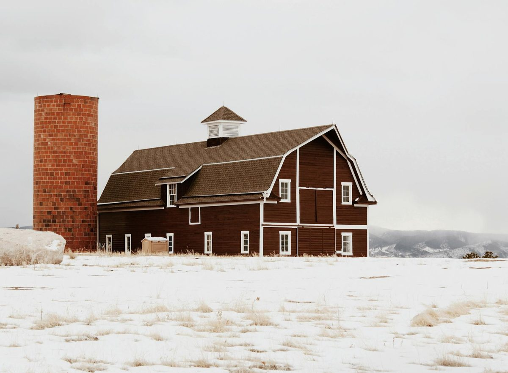

Pole barns and barndominiums are everywhere across rural Knox County and the surrounding ag belt - Karns, Powell, Halls, Corryton, Strawberry Plains, and out into Sevier and Blount County. The post-frame design is fast and inexpensive to put up, but the cavity-free wall section is impossible to insulate well with anything except spray foam. Closed cell spray foam applied to the inside of the steel skin and underside of the metal roof eliminates condensation, locks in heat in winter, keeps the building usable in summer, and is the only practical insulation method for a post-frame structure.

A pole barn has no stud cavities. The exterior walls are steel siding screwed directly to horizontal girts, with 6-8 inches of open air between the framing posts. Fiberglass batt does not fit. Vinyl-faced rolled blanket sags and rips. Foam board panels require continuous nailers and never seal the corners. Closed cell spray foam is the only insulation product that bonds to the steel, fills the awkward cavities around posts and bracing, and creates a continuous vapor barrier - all in one application. For Knoxville-area pole barns being converted to conditioned shop space or full barndominium living, spray foam is the path.
Standard scope on a Knoxville pole barn: 2-3 inches closed cell on the underside of the metal roof (R-14 to R-21), 2 inches closed cell on the inside of the wall steel (R-14), and 2 inches closed cell on the rim and end walls. For barndominiums, we add framed interior walls inside the post grid and fill those cavities with open cell foam for sound and additional thermal value.
Knoxville pole barn spray foam runs $2.50 to $5.50 per square foot of surface area in 2026 for closed cell at 2 inches. A typical 30x40 Knoxville-area pole barn (about 2,400 sq ft total surface) costs $7,500 to $14,000 for full coverage. Barndominium conversions cost more due to the framed interior walls and conditioning ductwork.
| Barn Size | Closed Cell 2" | Barndominium Build-Out |
|---|---|---|
| 24x30 pole barn | $5,500 - $9,500 | $10,500 - $18,000 |
| 30x40 pole barn | $7,500 - $14,000 | $14,000 - $24,000 |
| 40x60 pole barn | $13,500 - $22,000 | $23,000 - $38,000 |
| 50x80 pole barn | $20,000 - $34,000 | $36,000 - $58,000 |
| Roof-only condensation control | Roughly 40 percent of full coverage cost | |
Ag-use pole barns in Tennessee are exempt from many building code requirements, which keeps cost lower. Conditioned shops and barndominium conversions in Knox County require permits and inspection - we will spec to the appropriate level.
Closed cell on anything that touches steel. Period. The roof and wall steel are condensing surfaces - open cell foam will let humidity through to the steel and trap the resulting condensation. For interior framed walls inside a barndominium (where the steel is not the back of the cavity), open cell is fine for sound dampening and additional R-value at lower cost. See our closed cell page and open cell page for the spec details.
East Tennessee pole barns built before 2015 typically went up with zero insulation or 4-6 inches of vinyl-faced fiberglass blanket. After a decade of seasonal expansion and rodent traffic that fiberglass is sagging at best and a moldy mess at worst. Knox, Blount, and Sevier County have all seen explosive growth in barndominium conversions since 2022, with most projects starting from an existing ag pole barn. The Tennessee residential code allows post-frame conversion with continuous closed cell foam plus standard ceiling/wall finish. Our crew has done dozens of these conversions across the greater Knoxville area, and we coordinate with local Knox County inspectors on the unvented assembly approval. For straight metal building applications, see the metal building page.
Call (865) 564-7823 - Mon-Sat 7AM-7PM. Same-day written quotes available.
This website provides information for Knoxville TN spray foam insulation services. Inquiries are routed to licensed local spray foam installers in the Knoxville area. We are an advertising service and connect homeowners with vetted contractors.